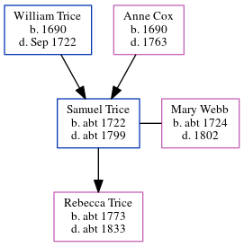

Samuel Trice c1722 - c1799
[ Home ] | [ Calendar ] | [ Surnames Index ] | [ Errors ] | [ Family History ]The child of William Trice and Anne Cox, Samuel Trice, the 5 times great-grandfather of Nigel Horne, was born in Littlebourne, Kent, England c. 1722, was baptised there at St Vincent of Saragossa Church on 23 May 1723 and married Mary Webb (with whom he had 1 child, Rebecca) at St Mary The Virgin, Minster, Thanet, Kent, England on 9 Oct 17451.
He died c. 1799 in Wickhambreaux, Kent, England and was buried there at St Andrews on 14 Aug 1799 (KFHS CD22)2.
Parents
- William was born in 1690
- Anne was born in 1690
Children
- Rebecca was born c. 1773
Citations
- Familysearch.org (www.familysearch.org)
- Kent, Canterbury Archdeaconry Burials - Findmypast
Media
Kent, Canterbury Archdeaconry burials 1538-1988 - GBPRS/CANT/D/95317024
England Marriages 1538-1973 - R_848032807
Kent, East Kent marriage index 1538-1754 - GBPRS/EASTKENT/MAR/202340/1
England Births & Baptisms 1538-1975 - R_883039779
Kent Baptisms - GBPRS/CANT/B/96437657
Britain, marriage licences - GBPRS/COA/MARRLICENCE/00156239/1
Family Tree
Map
Generated by ged2site. Last updated on Jul 3, 2024
Known Issues
Birth date (abt 1722) has no citations
Death date (abt 1799) has no citations